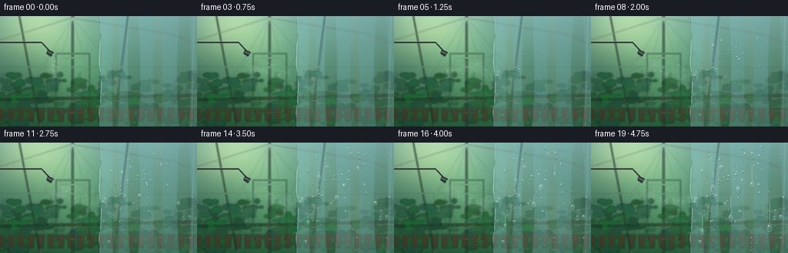
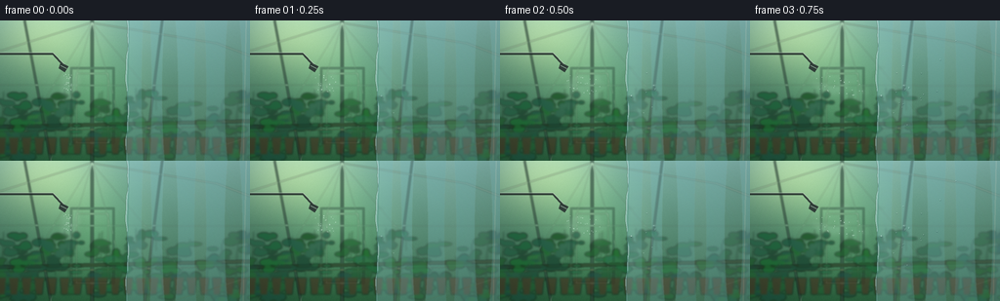
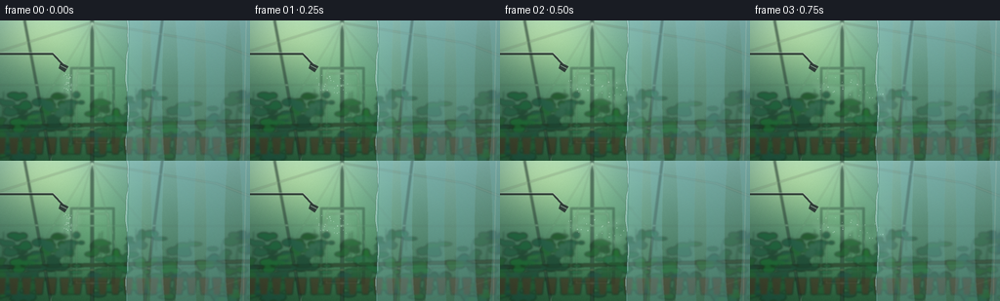

CODING AGENTS AS PIXEL WORLD MODELS
traex/GPT-5.6-Sol · phygen_104
点击播放 · 原生 RGB 像素
逐轮保存的候选
回放视频、检查图与代码变化。
每份候选均可单独播放。实际图片检查记录在下方工具轨迹中。
候选 01播放与检查图
点击播放 · 原生 RGB 像素


展开代码变化
--- 上一保存版本
+++ 本次保存版本
@@ -0,0 +1,257 @@
+from pathlib import Path
+import math
+import numpy as np
+from PIL import Image, ImageDraw, ImageFilter
+import artifact_io
+
+# Deterministic, fully procedural RGB animation.
+W, H, N = 256, 144, 20
+S = 3
+w, h = W*S, H*S
+rng = np.random.default_rng(104)
+
+def sc(v):
+ if isinstance(v, (tuple, list)):
+ return tuple(int(round(x*S)) for x in v)
+ return int(round(v*S))
+
+def layer():
+ return Image.new('RGBA', (w,h), (0,0,0,0))
+
+def add_glow(im, xy, radius, color, opacity=255):
+ m = Image.new('L',(w,h),0)
+ d = ImageDraw.Draw(m)
+ x,y=xy
+ d.ellipse((sc(x-radius),sc(y-radius),sc(x+radius),sc(y+radius)), fill=opacity)
+ m=m.filter(ImageFilter.GaussianBlur(sc(radius*.52)))
+ lay=Image.new('RGBA',(w,h),color+(0,)); lay.putalpha(m)
+ return Image.alpha_composite(im,lay)
+
+# Build a softly focused warm greenhouse behind the foreground sheet.
+yy, xx = np.mgrid[0:h,0:w]
+yf, xf = yy/(h-1), xx/(w-1)
+top=np.array([123,174,166.],float); bot=np.array([42,91,60.],float)
+a=(yf**.72)[...,None]
+base=top*(1-a)+bot*a
+# Warm sunlight from upper-left, plus a luminous far end.
+glow=np.exp(-((xf-.18)**2/(.24**2)+(yf-.08)**2/(.31**2)))
+far=np.exp(-((xf-.38)**2/(.19**2)+(yf-.51)**2/(.35**2)))
+base += glow[...,None]*np.array([69,59,24]) + far[...,None]*np.array([24,35,18])
+# Fine film/grain helps avoid flat synthetic gradients.
+noise=rng.normal(0,2.0,(h,w,1))
+base=np.clip(base+noise,0,255).astype(np.uint8)
+bg=Image.fromarray(base,'RGB').convert('RGBA')
+
+# Out-of-focus greenhouse glazing and structural ribs.
+struct=layer(); d=ImageDraw.Draw(struct)
+# roof planes / perspective beams
+beam=(52,76,65,170); hi=(213,232,204,110)
+d.line([sc((0,31)),sc((93,2)),sc((221,23)),sc((256,36))], fill=hi, width=sc(1.2))
+d.line([sc((94,0)),sc((94,144))], fill=beam, width=sc(3.4))
+d.line([sc((25,0)),sc((52,144))], fill=beam, width=sc(2.2))
+d.line([sc((166,0)),sc((148,144))], fill=beam, width=sc(2.4))
+d.line([sc((0,66)),sc((256,67))], fill=(205,228,203,65), width=sc(1))
+# glass pane seams
+for x in (7,52,135,213):
+ d.line([sc((94,2)),sc((x,144))],fill=(226,239,217,56),width=sc(.8))
+# far doorway and bench lines
+d.rectangle(sc((72,48,117,126)), outline=(50,82,68,115), width=sc(2))
+d.rectangle(sc((78,54,111,126)), outline=(212,225,195,65), width=sc(1))
+d.line([sc((0,109)),sc((256,103))], fill=(44,59,38,170), width=sc(4))
+d.line([sc((0,114)),sc((256,108))], fill=(153,119,70,105), width=sc(1))
+struct=struct.filter(ImageFilter.GaussianBlur(sc(.65)))
+bg=Image.alpha_composite(bg,struct)
+
+# Dense plant rows: silhouettes and leaf highlights, intentionally slightly blurred.
+plants=layer(); pd=ImageDraw.Draw(plants)
+for i in range(78):
+ x0=float(rng.uniform(-8,265)); y0=float(rng.uniform(91,151)); stem=float(rng.uniform(8,33))
+ col=(30,int(rng.integers(66,107)),int(rng.integers(39,67)),int(rng.integers(120,210)))
+ pd.line([sc((x0,y0)),sc((x0+rng.uniform(-3,3),y0-stem))],fill=(35,75,43,120),width=sc(.7))
+ for side in (-1,1):
+ for k in range(int(rng.integers(1,4))):
+ cy=y0-stem*rng.uniform(.16,.9); cx=x0+side*rng.uniform(2,8)
+ rx=rng.uniform(3,8); ry=rng.uniform(1.5,4)
+ pd.ellipse(sc((cx-rx,cy-ry,cx+rx,cy+ry)),fill=col)
+# bench/pots
+for x0 in np.arange(-4,262,13):
+ pd.polygon([sc((x0,120)),sc((x0+10,120)),sc((x0+8,137)),sc((x0+2,137))],fill=(70,50,33,155))
+plants=plants.filter(ImageFilter.GaussianBlur(sc(1.15)))
+bg=Image.alpha_composite(bg,plants)
+
+# hanging irrigation line and small fogging head makes the mist's source unambiguous.
+hardware=layer(); hd=ImageDraw.Draw(hardware)
+hd.line([sc((0,34)),sc((54,34)),sc((65,46))],fill=(43,53,50,225),width=sc(2.2))
+hd.line([sc((0,32.8)),sc((54,32.8)),sc((66,45))],fill=(187,201,188,150),width=sc(.55))
+hd.polygon([sc((62,43)),sc((70,47)),sc((66,53)),sc((60,49))],fill=(48,58,56,240))
+hd.line([sc((62,46)),sc((68,49))],fill=(207,224,215,190),width=sc(.7))
+bg=Image.alpha_composite(bg,hardware)
+
+# Droplet seeds. Condensation spreads outward from the contact zone near (132,70).
+drops=[]
+for i in range(150):
+ x=float(rng.uniform(134,252)); y=float(rng.uniform(5,140))
+ dist=math.sqrt(((x-139)/120)**2+((y-74)/94)**2)
+ onset=int(np.clip(2 + 8.0*dist + rng.normal(0,1.5),1,14))
+ # many pinprick droplets, fewer optically legible beads
+ u=rng.random()
+ if u<.70: r=float(rng.uniform(.28,.72))
+ elif u<.94: r=float(rng.uniform(.75,1.45))
+ else: r=float(rng.uniform(1.55,2.45))
+ drops.append((x,y,onset,r,rng.uniform(0,2*math.pi)))
+
+# Fixed larger coalescing beads / rivulets.
+rivulets=[
+ (158.5,38,7,21,2.45,10),
+ (181.5,69,9,29,2.8,13),
+ (209.0,29,10,26,2.35,12),
+ (232.0,79,11,32,3.05,15),
+ (144.5,96,12,20,2.15,9),
+]
+
+def droplet(target, x, y, r, alpha=220, elong=1.0):
+ """A tiny refractive water lens: shadow rim, cool transparent body, and specular glint."""
+ if r <= .12: return
+ dd=ImageDraw.Draw(target,'RGBA')
+ rx=max(.25,r*.84); ry=max(.3,r*elong)
+ # soft offset shadow and lower meniscus
+ dd.ellipse(sc((x-rx-.20,y-ry+.30,x+rx+.45,y+ry+.55)),fill=(18,54,54,int(alpha*.40)))
+ dd.ellipse(sc((x-rx,y-ry,x+rx,y+ry)),fill=(151,207,205,int(alpha*.32)),outline=(224,249,243,int(alpha*.64)),width=max(1,sc(.32)))
+ # refracted warm patch at bottom, bright pin highlight at upper left
+ if r>.72:
+ dd.ellipse(sc((x-rx*.42,y+ry*.18,x+rx*.52,y+ry*.67)),fill=(89,137,103,int(alpha*.30)))
+ hr=max(.20,r*.18)
+ dd.ellipse(sc((x-rx*.40-hr,y-ry*.48-hr,x-rx*.40+hr,y-ry*.48+hr)),fill=(249,255,250,int(alpha*.93)))
+
+def make_frame(fi):
+ t=fi/(N-1)
+ im=bg.copy()
+
+ # Volumetric mist plume. It advances to the plastic during the first second,
+ # then continuously curls against it rather than passing through.
+ mist=layer(); md=ImageDraw.Draw(mist,'RGBA')
+ front=min(139,72+fi*15)
+ # dozens of soft droplets/puffs traveling right, with mild upward convection
+ local_rng=np.random.default_rng(1200+fi)
+ for j in range(46):
+ q=(j+.5)/46
+ x=67 + q*(front-65) + 4*math.sin(j*1.7+fi*.55) + local_rng.normal(0,2.2)
+ center=66 + .14*(x-67) + 4*math.sin(q*6.5+fi*.28)
+ y=center + local_rng.normal(0,7.4)*(0.45+q*.8)
+ rx=local_rng.uniform(2.4,8.4)*(0.7+q*.35); ry=local_rng.uniform(1.2,4.2)
+ a=int(local_rng.uniform(11,35)*(1.1-.35*q))
+ md.ellipse(sc((x-rx,y-ry,x+rx,y+ry)),fill=(231,250,244,a))
+ # curling filaments visibly meet the sheet edge
+ for k in range(5):
+ pts=[]
+ for z in np.linspace(0,1,34):
+ x=66+z*(front-64)
+ y=64+k*4.0 + 5*math.sin(z*5.0+k*.9+fi*.22) + 2*z*z
+ pts.append(sc((x,y)))
+ md.line(pts,fill=(235,252,247,24+k*3),width=sc(1.1+k*.18))
+ mist=mist.filter(ImageFilter.GaussianBlur(sc(3.0)))
+ im=Image.alpha_composite(im,mist)
+ # add some sharper suspended microdroplets
+ sparkle=layer(); sd=ImageDraw.Draw(sparkle)
+ for j in range(25):
+ q=(j+.5)/25
+ x=68+q*(front-69)+3*math.sin(j*2.2+fi*.7)
+ y=63+.16*(x-67)+8*math.sin(j*2.7+fi*.31)
+ rr=.22+(j%4)*.07
+ sd.ellipse(sc((x-rr,y-rr,x+rr,y+rr)),fill=(237,255,248,105))
+ im=Image.alpha_composite(im,sparkle)
+
+ # Foreground cool plastic film: transparent blue cast, sinuous hanging edge,
+ # vertical folds and reflected greenhouse light.
+ film=layer(); fd=ImageDraw.Draw(film)
+ edgepts=[]
+ for y in range(-2,147,2):
+ ex=130 + 1.15*math.sin(y*.085) + .35*math.sin(y*.29)
+ edgepts.append(sc((ex,y)))
+ poly=edgepts+[sc((258,146)),sc((258,-2))]
+ fd.polygon(poly,fill=(156,210,217,76))
+ # Cool edge and curled highlight
+ fd.line(edgepts,fill=(223,250,248,185),width=sc(1.15))
+ fd.line([sc((132,0)),sc((128.9,144))],fill=(71,139,151,90),width=sc(.6))
+ # Vertical undulations characteristic of thin polyethylene
+ for x0,alpha,width in [(150,35,5),(174,24,8),(205,40,6),(239,25,9)]:
+ fd.ellipse(sc((x0-width,-25,x0+width,168)),fill=(223,249,248,alpha))
+ fd.line([sc((252,0)),sc((249,144))],fill=(243,255,252,75),width=sc(1))
+ # diagonal crease near lower right
+ fd.line([sc((176,144)),sc((256,119))],fill=(231,251,248,47),width=sc(.7))
+ film=film.filter(ImageFilter.GaussianBlur(sc(.45)))
+ im=Image.alpha_composite(im,film)
+
+ # Condensation fog blooms at the impact area and spreads across cold film.
+ if fi>=2:
+ haze=layer(); hm=Image.new('L',(w,h),0); hd=ImageDraw.Draw(hm)
+ spread=(fi-1)/(N-2)
+ # several overlapping translucent cloudy zones, constrained to right of edge
+ for k in range(7):
+ cx=139 + spread*(13+k*13) + 3*math.sin(k*1.9)
+ cy=72 + (k-3)*11 + 5*math.sin(k*2.1+fi*.08)
+ rx=10+spread*(20+k*1.5); ry=12+spread*15
+ hd.ellipse(sc((cx-rx,cy-ry,cx+rx,cy+ry)),fill=int(9+spread*11))
+ hm=hm.filter(ImageFilter.GaussianBlur(sc(8)))
+ # hard constrain to film side with feathered contact boundary
+ arr=np.asarray(hm,dtype=np.float32)
+ X=np.arange(w)[None,:]/S
+ boundary=1/(1+np.exp(-(X-130)*1.5))
+ arr=np.clip(arr*boundary,0,255).astype(np.uint8)
+ haze.putalpha(Image.fromarray(arr,'L'))
+ haze.paste((225,243,241,0),(0,0,w,h))
+ haze.putalpha(Image.fromarray(arr,'L'))
+ im=Image.alpha_composite(im,haze)
+
+ # Stationary nucleation droplets grow over time. They are absent on warm air side.
+ water=layer()
+ for x,y,onset,rf,phase in drops:
+ if fi<onset: continue
+ age=(fi-onset+1)/max(1,(N-onset))
+ r=rf*(.18+.82*math.sqrt(age))
+ # tiny apparent downward creep for largest droplets in final frames
+ dy=max(0,fi-15)*max(0,rf-1.5)*.08
+ droplet(water,x,y+dy,r,int(145+90*age),1.0+max(0,r-1.3)*.10)
+
+ # Coalescence: long faint wet tracks remain while large beads slide downward.
+ wd=ImageDraw.Draw(water,'RGBA')
+ for x,y0,start,distance,rad,delay in rivulets:
+ if fi<start: continue
+ p=(fi-start)/max(1,N-1-start)
+ move=max(0,(fi-delay)/max(1,N-1-delay))
+ y=y0+distance*(move**1.35)
+ if move>0:
+ wd.line([sc((x,y0)),sc((x+.35*math.sin(fi),y-1.4))],fill=(216,244,241,int(45+75*move)),width=sc(.65))
+ wd.line([sc((x+1.0,y0+2)),sc((x+.8,y-2))],fill=(45,104,110,int(24+32*move)),width=sc(.35))
+ droplet(water,x,y,rad*(.52+.48*math.sqrt(p+.03)),230,1.18+move*.65)
+ # explicit pair merging into one central bead after the middle of the timelapse
+ if fi>=7:
+ if fi<13:
+ gap=(13-fi)*.28
+ droplet(water,191-gap,53,1.0+(fi-7)*.10,220)
+ droplet(water,191+gap,56,1.15+(fi-7)*.08,220)
+ else:
+ droplet(water,191,55+(fi-13)*1.0,2.45+(fi-13)*.07,238,1.15+(fi-13)*.06)
+ im=Image.alpha_composite(im,water)
+
+ # A narrow bright contact gleam makes the collision plane easy to read.
+ if fi>=1:
+ contact=layer(); cd=ImageDraw.Draw(contact)
+ strength=int(32+30*min(1,fi/5))
+ cd.arc(sc((124,48,142,94)),70,285,fill=(241,255,251,strength),width=sc(.7))
+ contact=contact.filter(ImageFilter.GaussianBlur(sc(1.2)))
+ im=Image.alpha_composite(im,contact)
+
+ # Subtle vignette and cinematic color finish.
+ arr=np.asarray(im.convert('RGB'),dtype=np.float32)
+ Y,X=np.mgrid[0:h,0:w]; nx=(X-w*.50)/(w*.72); ny=(Y-h*.50)/(h*.82)
+ vig=np.clip(1-.16*np.maximum(0,nx*nx+ny*ny-.18),.75,1)[...,None]
+ arr=np.clip((arr-128)*1.045+128,0,255)*vig
+ # downsample supersampled render for clean antialiasing
+ out=Image.fromarray(np.clip(arr,0,255).astype(np.uint8)).resize((W,H),Image.Resampling.LANCZOS)
+ return np.asarray(out,dtype=np.uint8)
+
+frames=np.stack([make_frame(i) for i in range(N)],axis=0)
+assert frames.shape==(20,144,256,3) and frames.dtype==np.uint8
+artifact_io.save(frames,Path(__file__).resolve().parent)
+print('saved',frames.shape,frames.dtype,'range',int(frames.min()),int(frames.max()))
候选 02播放与检查图
点击播放 · 原生 RGB 像素

展开代码变化
--- 上一保存版本
+++ 本次保存版本
@@ -92,7 +92,8 @@
for i in range(150):
x=float(rng.uniform(134,252)); y=float(rng.uniform(5,140))
dist=math.sqrt(((x-139)/120)**2+((y-74)/94)**2)
- onset=int(np.clip(2 + 8.0*dist + rng.normal(0,1.5),1,14))
+ # The first nuclei appear only after the advancing plume reaches the film.
+ onset=int(np.clip(4 + 7.0*dist + rng.normal(0,1.35),4,14))
# many pinprick droplets, fewer optically legible beads
u=rng.random()
if u<.70: r=float(rng.uniform(.28,.72))
@@ -130,7 +131,8 @@
# Volumetric mist plume. It advances to the plastic during the first second,
# then continuously curls against it rather than passing through.
mist=layer(); md=ImageDraw.Draw(mist,'RGBA')
- front=min(139,72+fi*15)
+ # Contact is established around frame 3, before condensation begins.
+ front=min(139,72+fi*28)
# dozens of soft droplets/puffs traveling right, with mild upward convection
local_rng=np.random.default_rng(1200+fi)
for j in range(46):
@@ -183,9 +185,9 @@
im=Image.alpha_composite(im,film)
# Condensation fog blooms at the impact area and spreads across cold film.
- if fi>=2:
+ if fi>=3:
haze=layer(); hm=Image.new('L',(w,h),0); hd=ImageDraw.Draw(hm)
- spread=(fi-1)/(N-2)
+ spread=(fi-2)/(N-3)
# several overlapping translucent cloudy zones, constrained to right of edge
for k in range(7):
cx=139 + spread*(13+k*13) + 3*math.sin(k*1.9)
@@ -235,7 +237,7 @@
im=Image.alpha_composite(im,water)
# A narrow bright contact gleam makes the collision plane easy to read.
- if fi>=1:
+ if fi>=2:
contact=layer(); cd=ImageDraw.Draw(contact)
strength=int(32+30*min(1,fi/5))
cd.arc(sc((124,48,142,94)),70,285,fill=(241,255,251,strength),width=sc(.7))
可观测工具轨迹
实际执行的命令与返回图片。
命令 1exit 0
/bin/bash -lc "cat prompt.txt && printf '\\n--- GENERATION_RULES.md ---\\n' && cat GENERATION_RULES.md"
命令 2exit 0
/bin/bash -lc "cat task_spec.json && printf '\\n--- FILES ---\\n' && find . -maxdepth 2 -type f -printf '%p\\n' | sort"
命令 3exit 0
/bin/bash -lc "command -v ffmpeg || true; command -v blender || true; command -v python3 || true; python3 - <<'PY' mods=['numpy','PIL','cv2','imageio','cairo','moderngl'] for m in mods: try: x=__import__(m); print(m,'OK',getattr(x,'__version__','')) except Exception as e: print(m,'NO',e) PY"
命令 4exit 0
/bin/bash -lc "sed -n '1,260p' artifact_io.py"
命令 5exit 0
/bin/bash -lc "cat > generate.py <<'PY'
from pathlib import Path
import math
import numpy as np
from PIL import Image, ImageDraw, ImageFilter
import artifact_io
# Deterministic, fully procedural RGB animation.
W, H, N = 256, 144, 20
S = 3
w, h = W*S, H*S
rng = np.random.default_rng(104)
def sc(v):
if isinstance(v, (tuple, list)):
return tuple(int(round(x*S)) for x in v)
return int(round(v*S))
def layer():
return Image.new('RGBA', (w,h), (0,0,0,0))
def add_glow(im, xy, radius, color, opacity=255):
m = Image.new('L',(w,h),0)
d = ImageDraw.Draw(m)
x,y=xy
d.ellipse((sc(x-radius),sc(y-radius),sc(x+radius),sc(y+radius)), fill=opacity)
m=m.filter(ImageFilter.GaussianBlur(sc(radius*.52)))
lay=Image.new('RGBA',(w,h),color+(0,)); lay.putalpha(m)
return Image.alpha_composite(im,lay)
# Build a softly focused warm greenhouse behind the foreground sheet.
yy, xx = np.mgrid[0:h,0:w]
yf, xf = yy/(h-1), xx/(w-1)
top=np.array([123,174,166.],float); bot=np.array([42,91,60.],float)
a=(yf**.72)[...,None]
base=top*(1-a)+bot*a
# Warm sunlight from upper-left, plus a luminous far end.
glow=np.exp(-((xf-.18)**2/(.24**2)+(yf-.08)**2/(.31**2)))
far=np.exp(-((xf-.38)**2/(.19**2)+(yf-.51)**2/(.35**2)))
base += glow[...,None]*np.array([69,59,24]) + far[...,None]*np.array([24,35,18])
# Fine film/grain helps avoid flat synthetic gradients.
noise=rng.normal(0,2.0,(h,w,1))
base=np.clip(base+noise,0,255).astype(np.uint8)
bg=Image.fromarray(base,'RGB').convert('RGBA')
# Out-of-focus greenhouse glazing and structural ribs.
struct=layer(); d=ImageDraw.Draw(struct)
# roof planes / perspective beams
beam=(52,76,65,170); hi=(213,232,204,110)
d.line([sc((0,31)),sc((93,2)),sc((221,23)),sc((256,36))], fill=hi, width=sc(1.2))
d.line([sc((94,0)),sc((94,144))], fill=beam, width=sc(3.4))
d.line([sc((25,0)),sc((52,144))], fill=beam, width=sc(2.2))
d.line([sc((166,0)),sc((148,144))], fill=beam, width=sc(2.4))
d.line([sc((0,66)),sc((256,67))], fill=(205,228,203,65), width=sc(1))
# glass pane seams
for x in (7,52,135,213):
d.line([sc((94,2)),sc((x,144))],fill=(226,239,217,56),width=sc(.8))
# far doorway and bench lines
d.rectangle(sc((72,48,117,126)), outline=(50,82,68,115), width=sc(2))
d.rectangle(sc((78,54,111,126)), outline=(212,225,195,65), width=sc(1))
d.line([sc((0,109)),sc((256,103))], fill=(44,59,38,170), width=sc(4))
d.line([sc((0,114)),sc((256,108))], fill=(153,119,70,105), width=sc(1))
struct=struct.filter(ImageFilter.GaussianBlur(sc(.65)))
bg=Image.alpha_composite(bg,struct)
# Dense plant rows: silhouettes and leaf highlights, intentionally slightly blurred.
plants=layer(); pd=ImageDraw.Draw(plants)
for i in range(78):
x0=float(rng.uniform(-8,265)); y0=float(rng.uniform(91,151)); stem=float(rng.uniform(8,33))
col=(30,int(rng.integers(66,107)),int(rng.integers(39,67)),int(rng.integers(120,210)))
pd.line([sc((x0,y0)),sc((x0+rng.uniform(-3,3),y0-stem))],fill=(35,75,43,120),width=sc(.7))
for side in (-1,1):
for k in range(int(rng.integers(1,4))):
cy=y0-stem*rng.uniform(.16,.9); cx=x0+side*rng.uniform(2,8)
rx=rng.uniform(3,8); ry=rng.uniform(1.5,4)
pd.ellipse(sc((cx-rx,cy-ry,cx+rx,cy+ry)),fill=col)
# bench/pots
for x0 in np.arange(-4,262,13):
pd.polygon([sc((x0,120)),sc((x0+10,120)),sc((x0+8,137)),sc((x0+2,137))],fill=(70,50,33,155))
plants=plants.filter(ImageFilter.GaussianBlur(sc(1.15)))
bg=Image.alpha_composite(bg,plants)
# hanging irrigation line and small fogging head makes the mist's source unambiguous.
hardware=layer(); hd=ImageDraw.Draw(hardware)
hd.line([sc((0,34)),sc((54,34)),sc((65,46))],fill=(43,53,50,225),width=sc(2.2))
hd.line([sc((0,32.8)),sc((54,32.8)),sc((66,45))],fill=(187,201,188,150),width=sc(.55))
hd.polygon([sc((62,43)),sc((70,47)),sc((66,53)),sc((60,49))],fill=(48,58,56,240))
hd.line([sc((62,46)),sc((68,49))],fill=(207,224,215,190),width=sc(.7))
bg=Image.alpha_composite(bg,hardware)
# Droplet seeds. Condensation spreads outward from the contact zone near (132,70).
drops=[]
for i in range(150):
x=float(rng.uniform(134,252)); y=float(rng.uniform(5,140))
dist=math.sqrt(((x-139)/120)**2+((y-74)/94)**2)
onset=int(np.clip(2 + 8.0*dist + rng.normal(0,1.5),1,14))
# many pinprick droplets, fewer optically legible beads
u=rng.random()
if u<.70: r=float(rng.uniform(.28,.72))
elif u<.94: r=float(rng.uniform(.75,1.45))
else: r=float(rng.uniform(1.55,2.45))
drops.append((x,y,onset,r,rng.uniform(0,2*math.pi)))
# Fixed larger coalescing beads / rivulets.
rivulets=[
(158.5,38,7,21,2.45,10),
(181.5,69,9,29,2.8,13),
(209.0,29,10,26,2.35,12),
(232.0,79,11,32,3.05,15),
(144.5,96,12,20,2.15,9),
]
def droplet(target, x, y, r, alpha=220, elong=1.0):
\"\"\"A tiny refractive water lens: shadow rim, cool transparent body, and specular glint.\"\"\"
if r <= .12: return
dd=ImageDraw.Draw(target,'RGBA')
rx=max(.25,r*.84); ry=max(.3,r*elong)
# soft offset shadow and lower meniscus
dd.ellipse(sc((x-rx-.20,y-ry+.30,x+rx+.45,y+ry+.55)),fill=(18,54,54,int(alpha*.40)))
dd.ellipse(sc((x-rx,y-ry,x+rx,y+ry)),fill=(151,207,205,int(alpha*.32)),outline=(224,249,243,int(alpha*.64)),width=max(1,sc(.32)))
# refracted warm patch at bottom, bright pin highlight at upper left
if r>.72:
dd.ellipse(sc((x-rx*.42,y+ry*.18,x+rx*.52,y+ry*.67)),fill=(89,137,103,int(alpha*.30)))
hr=max(.20,r*.18)
dd.ellipse(sc((x-rx*.40-hr,y-ry*.48-hr,x-rx*.40+hr,y-ry*.48+hr)),fill=(249,255,250,int(alpha*.93)))
def make_frame(fi):
t=fi/(N-1)
im=bg.copy()
# Volumetric mist plume. It advances to the plastic during the first second,
# then continuously curls against it rather than passing through.
mist=layer(); md=ImageDraw.Draw(mist,'RGBA')
front=min(139,72+fi*15)
# dozens of soft droplets/puffs traveling right, with mild upward convection
local_rng=np.random.default_rng(1200+fi)
for j in range(46):
q=(j+.5)/46
x=67 + q*(front-65) + 4*math.sin(j*1.7+fi*.55) + local_rng.normal(0,2.2)
center=66 + .14*(x-67) + 4*math.sin(q*6.5+fi*.28)
y=center + local_rng.normal(0,7.4)*(0.45+q*.8)
rx=local_rng.uniform(2.4,8.4)*(0.7+q*.35); ry=local_rng.uniform(1.2,4.2)
a=int(local_rng.uniform(11,35)*(1.1-.35*q))
md.ellipse(sc((x-rx,y-ry,x+rx,y+ry)),fill=(231,250,244,a))
# curling filaments visibly meet the sheet edge
for k in range(5):
pts=[]
for z in np.linspace(0,1,34):
x=66+z*(front-64)
y=64+k*4.0 + 5*math.sin(z*5.0+k*.9+fi*.22) + 2*z*z
pts.append(sc((x,y)))
md.line(pts,fill=(235,252,247,24+k*3),width=sc(1.1+k*.18))
mist=mist.filter(ImageFilter.GaussianBlur(sc(3.0)))
im=Image.alpha_composite(im,mist)
# add some sharper suspended microdroplets
sparkle=layer(); sd=ImageDraw.Draw(sparkle)
for j in range(25):
q=(j+.5)/25
x=68+q*(front-69)+3*math.sin(j*2.2+fi*.7)
y=63+.16*(x-67)+8*math.sin(j*2.7+fi*.31)
rr=.22+(j%4)*.07
sd.ellipse(sc((x-rr,y-rr,x+rr,y+rr)),fill=(237,255,248,105))
im=Image.alpha_composite(im,sparkle)
# Foreground cool plastic film: transparent blue cast, sinuous hanging edge,
# vertical folds and reflected greenhouse light.
film=layer(); fd=ImageDraw.Draw(film)
edgepts=[]
for y in range(-2,147,2):
ex=130 + 1.15*math.sin(y*.085) + .35*math.sin(y*.29)
edgepts.append(sc((ex,y)))
poly=edgepts+[sc((258,146)),sc((258,-2))]
fd.polygon(poly,fill=(156,210,217,76))
# Cool edge and curled highlight
fd.line(edgepts,fill=(223,250,248,185),width=sc(1.15))
fd.line([sc((132,0)),sc((128.9,144))],fill=(71,139,151,90),width=sc(.6))
# Vertical undulations characteristic of thin polyethylene
for x0,alpha,width in [(150,35,5),(174,24,8),(205,40,6),(239,25,9)]:
fd.ellipse(sc((x0-width,-25,x0+width,168)),fill=(223,249,248,alpha))
fd.line([sc((252,0)),sc((249,144))],fill=(243,255,252,75),width=sc(1))
# diagonal crease near lower right
fd.line([sc((176,144)),sc((256,119))],fill=(231,251,248,47),width=sc(.7))
film=film.filter(ImageFilter.GaussianBlur(sc(.45)))
im=Image.alpha_composite(im,film)
# Condensation fog blooms at the impact area and spreads across cold film.
if fi>=2:
haze=layer(); hm=Image.new('L',(w,h),0); hd=ImageDraw.Draw(hm)
spread=(fi-1)/(N-2)
# several overlapping translucent cloudy zones, constrained to right of edge
for k in range(7):
cx=139 + spread*(13+k*13) + 3*math.sin(k*1.9)
cy=72 + (k-3)*11 + 5*math.sin(k*2.1+fi*.08)
rx=10+spread*(20+k*1.5); ry=12+spread*15
hd.ellipse(sc((cx-rx,cy-ry,cx+rx,cy+ry)),fill=int(9+spread*11))
hm=hm.filter(ImageFilter.GaussianBlur(sc(8)))
# hard constrain to film side with feathered contact boundary
arr=np.asarray(hm,dtype=np.float32)
X=np.arange(w)[None,:]/S
boundary=1/(1+np.exp(-(X-130)*1.5))
arr=np.clip(arr*boundary,0,255).astype(np.uint8)
haze.putalpha(Image.fromarray(arr,'L'))
haze.paste((225,243,241,0),(0,0,w,h))
haze.putalpha(Image.fromarray(arr,'L'))
im=Image.alpha_composite(im,haze)
# Stationary nucleation droplets grow over time. They are absent on warm air side.
water=layer()
for x,y,onset,rf,phase in drops:
if fi<onset: continue
age=(fi-onset+1)/max(1,(N-onset))
r=rf*(.18+.82*math.sqrt(age))
# tiny apparent downward creep for largest droplets in final frames
dy=max(0,fi-15)*max(0,rf-1.5)*.08
droplet(water,x,y+dy,r,int(145+90*age),1.0+max(0,r-1.3)*.10)
# Coalescence: long faint wet tracks remain while large beads slide downward.
wd=ImageDraw.Draw(water,'RGBA')
for x,y0,start,distance,rad,delay in rivulets:
if fi<start: continue
p=(fi-start)/max(1,N-1-start)
move=max(0,(fi-delay)/max(1,N-1-delay))
y=y0+distance*(move**1.35)
if move>0:
wd.line([sc((x,y0)),sc((x+.35*math.sin(fi),y-1.4))],fill=(216,244,241,int(45+75*move)),width=sc(.65))
wd.line([sc((x+1.0,y0+2)),sc((x+.8,y-2))],fill=(45,104,110,int(24+32*move)),width=sc(.35))
droplet(water,x,y,rad*(.52+.48*math.sqrt(p+.03)),230,1.18+move*.65)
# explicit pair merging into one central bead after the middle of the timelapse
if fi>=7:
if fi<13:
gap=(13-fi)*.28
droplet(water,191-gap,53,1.0+(fi-7)*.10,220)
droplet(water,191+gap,56,1.15+(fi-7)*.08,220)
else:
droplet(water,191,55+(fi-13)*1.0,2.45+(fi-13)*.07,238,1.15+(fi-13)*.06)
im=Image.alpha_composite(im,water)
# A narrow bright contact gleam makes the collision plane easy to read.
if fi>=1:
contact=layer(); cd=ImageDraw.Draw(contact)
strength=int(32+30*min(1,fi/5))
cd.arc(sc((124,48,142,94)),70,285,fill=(241,255,251,strength),width=sc(.7))
contact=contact.filter(ImageFilter.GaussianBlur(sc(1.2)))
im=Image.alpha_composite(im,contact)
# Subtle vignette and cinematic color finish.
arr=np.asarray(im.convert('RGB'),dtype=np.float32)
Y,X=np.mgrid[0:h,0:w]; nx=(X-w*.50)/(w*.72); ny=(Y-h*.50)/(h*.82)
vig=np.clip(1-.16*np.maximum(0,nx*nx+ny*ny-.18),.75,1)[...,None]
arr=np.clip((arr-128)*1.045+128,0,255)*vig
# downsample supersampled render for clean antialiasing
out=Image.fromarray(np.clip(arr,0,255).astype(np.uint8)).resize((W,H),Image.Resampling.LANCZOS)
return np.asarray(out,dtype=np.uint8)
frames=np.stack([make_frame(i) for i in range(N)],axis=0)
assert frames.shape==(20,144,256,3) and frames.dtype==np.uint8
artifact_io.save(frames,Path(__file__).resolve().parent)
print('saved',frames.shape,frames.dtype,'range',int(frames.min()),int(frames.max()))
PY
python3 generate.py"命令 6exit 0
/bin/bash -lc "python3 - <<'PY'
import numpy as np
from PIL import Image
from pathlib import Path
fs=np.stack([np.asarray(Image.open(f).convert('RGB')) for f in sorted(Path('frames').glob('*.png'))])
print('frames',fs.shape,fs.dtype)
print('frame mean/std:')
for i in [0,1,2,5,9,13,16,19]: print(i, fs[i].mean().round(2),fs[i].std().round(2))
print('successive MAD',np.mean(np.abs(np.diff(fs.astype(float),axis=0)),axis=(1,2,3)).round(3).tolist())
# edge/high-frequency complexity in cold film and warm-air regions
for i in [0,5,10,15,19]:
g=fs[i].mean(2)
lap=np.abs(g[1:-1,1:-1]*4-g[:-2,1:-1]-g[2:,1:-1]-g[1:-1,:-2]-g[1:-1,2:])
print('detail',i,'left',round(float(lap[:,65:125].mean()),2),'film',round(float(lap[:,135:250].mean()),2))
# packed artifact metadata
z=np.load('pixels.npz')['pixels']; print('pixels',z.shape,z.dtype,'unique',len(np.unique(z)))
PY"命令 7exit 0
/bin/bash -lc 'ls -lh generate.py pixels.npz index.html inspection.png transition_check.png frames/00.png frames/19.png && python3 -m py_compile generate.py && git status --short'
命令 8exit 0
/bin/bash -lc "python3 generate.py && python3 - <<'PY'
import json, numpy as np
from pathlib import Path
from PIL import Image
fs=np.stack([np.asarray(Image.open(f).convert('RGB')) for f in sorted(Path('frames').glob('*.png'))])
s=json.loads(Path('task_spec.json').read_text())
assert fs.shape==(s['frames'],s['height'],s['width'],3)
assert fs.dtype==np.uint8
z=np.load('pixels.npz')['pixels']
assert z.shape==(s['height'],s['width'],s['frames'])
for name in ['index.html','inspection.png','transition_check.png','pixels.npz']:
assert Path(name).stat().st_size>0
mad=np.mean(np.abs(np.diff(fs.astype(np.int16),axis=0)),axis=(1,2,3))
print('FINAL VALIDATION OK')
print('shape',fs.shape,'fps',s['fps'],'duration',s['frames']/s['fps'])
print('temporal MAD',np.round(mad,3).tolist())
print('first_to_last MAD',round(float(np.mean(np.abs(fs[-1].astype(float)-fs[0]))),3))
PY"保存候选 2 份；完成命令 8 次；可验证图片返回 0 张。原始 API 响应与完整日志保留在本地。